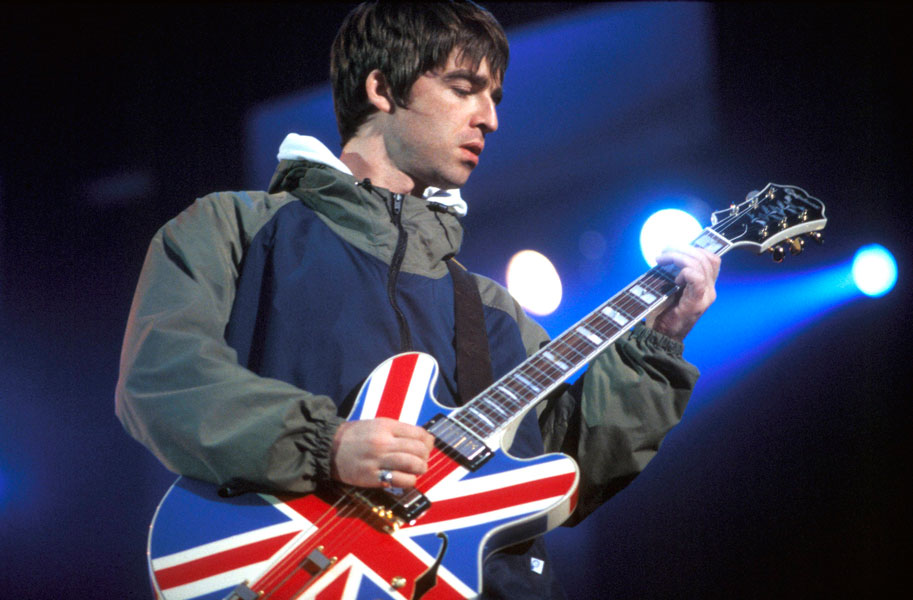
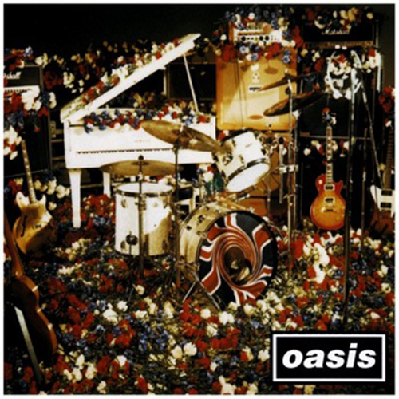
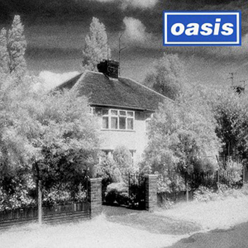
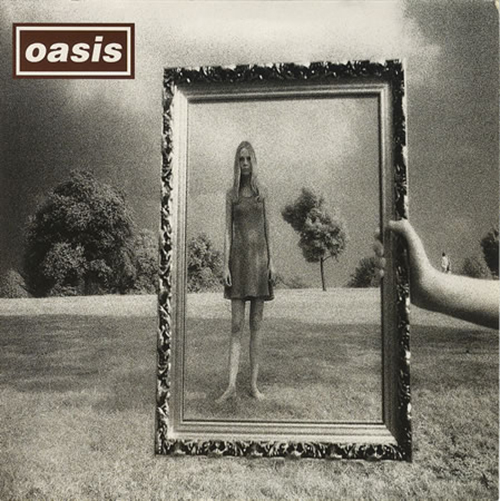

90년대 영국 최고의 히트메이커. 브릿 팝의 상징.
비틀즈에게 영향을 많이 받은 밴드이지만, 비틀즈와는 다르게
새로운 시도를 그리 좋아하지 않았다. 하지만 그것이 오아시스만의
강점이기도 하였으며, 많은 이들에게 사랑받을 수 있는 이유이기도 했다.

오아시스는 1991년 맨체스터에서 결성된 5인조 록밴드이다.
초창기 멤버는 노엘 갤러거, 리암 갤러거, 폴 귁시 맥귀건, 폴 본헤드 아서스, 토니 매캐롤이었다.
기타리스트 겸 작곡가인 노엘 갤러거와 싱어이자 프론트맨인 리암 갤러거 형제가 주축이 되었다.
이후 5인 체제는 계속 유지하였으나 갤러거 형제를 제외한 멤버들의 교체가 몇번 진행되었다.
90년대 밴드 음악에 매우 큰 영향을 끼쳤으며 브릿팝의 전성기를 이끌었다.
Recommended Song

Don't Look Back In Anger
1995년 10월 2일에 발매된 앨범 (What's the story) Morning Glory? 의 수록곡이다.
이 곡은 밴드의 기타리스트이자 메인 작곡가인 노엘 갤러거에 의해 씌여졌는데,
노엘이 리암 갤러거 대신 보컬을 맡은 곡으로선 처음으로 주목받은 싱글이었다.
오아시스가 보여주는 브릿팝의 결정체라고 할 수 있는 곡이다.

Live Forever
1994년 8월 8일 오아시스의 데뷔앨범 《Definitely Maybe》이 발매되기 바로 전
그 앨범의 세 번째 싱글로 발매된 곡이다.
노엘 갤러거는 이 곡을 오아시스에 가입하기 전인 1991년에 작곡했었다.
오아시스의 극단적일 정도의 낙관주의를 잘 보여주는 곡이다.

Wonderwall
1995년 10월 2일에 발매된 앨범 (What's the story) Morning Glory? 의 수록곡이다.
메인 작곡가 노엘 갤러거에 의해 쓰여졌다.영국 초등학교 음악 교과서에도 수록되었다.
오아시스의 수많은 곡들 중에서도 꾸준한 사랑을 받아와 2008년에는 76번째로 영국에서 가장 많이 팔린 싱글이다.